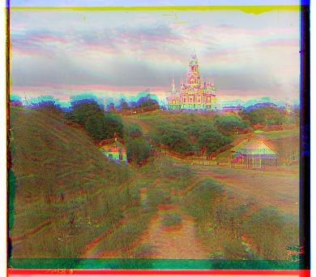
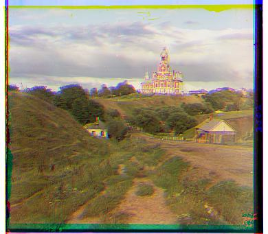

Introduction
Write your project introduction here. Explain the purpose of your project, its goals, and any background information that's necessary for understanding your work.
Section 1: .jpg images
Images




Section 2: .tif images
Images
Conclusion
Summarize your findings, discuss the implications of your results, and suggest potential areas for future work or improvement.